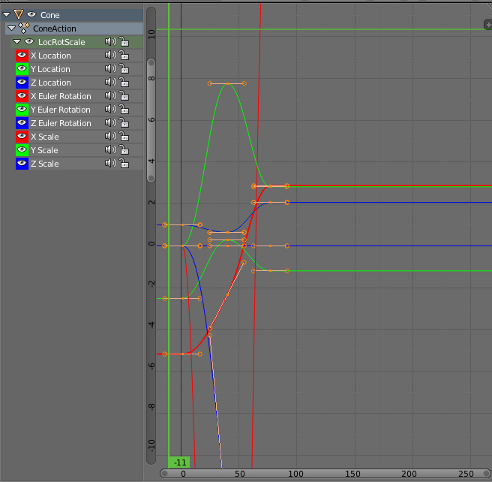

Section 14: Blender Animation and Sequencer
We finish our brief introduction to Blender by looking at animation in more depth. Basic keyframe animation was mentioned in Section 12. Here, we will concentrate on several more advanced kinds of animations that can't be done with simple keyframes. We will also look at Blender's sequencer, which can be used to compose several animations and still images into a short video, with things like titles and fades from one scene to the next.
More Controls
Blender has a few more controls that will be useful for working with animation. Look for the "Render", "World", and "Scene" buttons in the properties panel along the right edge of the Blender window:"

Here are a few things you can do with the controls revealed by these buttons:
In the World controls, you can turn on and configure Mist and Stars, at the bottom of the panel. At the top, you can control the background of the rendered image. Check the "Blend Sky" box and set the "Horizon Color" and "Zenith Color" to get a color gradient from the bottom to the top of the sky; without"Blend Sky", the "Horizon Color" is used as a uniform background color. Also, you can add a texture to the sky. Click from the World controls to the Texture controls; make sure that you are editing the world texture. Add a texture and configure it. To see an effect, make sure that "Horizon" is checked under "Influence." I got a nice cloud background using a Clouds texture, with the "Size" setting set to 0.1 and the texture color changed from the default magenta to white.
In the Scene controls, you can select the camera whose view is shown when you press Keypad-5 and when you render an image. You can add extra cameras to a scene using the "Add" menu. When you render an image, the scene is rendered from the point of view of the camera that is currently selected in the Scene controls. For example, this is useful for making images and animations that show the same scene from several different points of view. You can also change the selected camera by right-clicking the camera that you want to use in the 3D View and hitting CONTROL-KEYPAD-0.
The Render controls are especially important when rendering images or animations of your scene. At the top of the Render control panel, you will find buttons that you can use to render an individual image or an animation. (These duplicate the F12 key and the render commands in the menu bar.) The "Resolution" controls the size of the image that will be produced. You can specify the X and Y dimensions and also a percentage; the stated dimensions are multiplied by the percentage to get the actual image size (presumably to make it easy to make small size test runs). The "Frame Range" duplicates the animation start and end frames from the timeline at the bottom of the Blender window. Note that the "Frame Step" lets you render just a subset of the frames. For example, set it to 2 to render every other frame; again, this can be used to speed things up for test runs.
You can turn off some features during rendering if you want to speed things up. Anti-aliasing, for example, is something that should always be on to produce a good quality image, but it does take extra time to compute. (You might increase the Anti-Aliasing setting to "16" when you want the best quality.) Similarly, you can turn off shadows, textures, etc, under "Shading."
 Near the bottom of the Render control panel, you will see a section
labeled "Output," as shown at the right. This section is for controlling the output of animations.
(For single images, you can select the file type when you save the
rendered image.)
When you render an animation, you will see each frame being rendered
on the screen. As each frame is rendered, it is saved to disk.
You have to set the output destination and format before rendering
the animation, and you do that in the "Output" section of the Render
control panel. To set the output destination,
enter a directory name in the box just below the word "Output".
You can add a file name; Blender will add frame numbers and a file extension to
the name. Note that the default output destination
is shown as the /tmp directory, and you will probably want to change that.
(You can change the default directory for render output, and lots of other settings,
using "User Preferences", in the "File" menu.)
You will likely also want to change the format of the animation output,
shown as PNG in the above image. Note that if
an image format, such as PNG, is selected for rendering an
animation, then each frame of the animation will be
rendered as a separate image file. This is something that
is often done to allow further processing, but you probably
want to use something like AVI JPEG or H.264. I have found
AVI JPEG to work on most computers. If you want to use
your animation on a web page with the HTML5 <video> tag,
you will currently need two animations to support all major browsers:
Ogg Theora and H.264 with the "Format" in the "Encoding" section set to
MPEG-4 (in the Render controls, just under the "Output" section).
For an example, click here.
Near the bottom of the Render control panel, you will see a section
labeled "Output," as shown at the right. This section is for controlling the output of animations.
(For single images, you can select the file type when you save the
rendered image.)
When you render an animation, you will see each frame being rendered
on the screen. As each frame is rendered, it is saved to disk.
You have to set the output destination and format before rendering
the animation, and you do that in the "Output" section of the Render
control panel. To set the output destination,
enter a directory name in the box just below the word "Output".
You can add a file name; Blender will add frame numbers and a file extension to
the name. Note that the default output destination
is shown as the /tmp directory, and you will probably want to change that.
(You can change the default directory for render output, and lots of other settings,
using "User Preferences", in the "File" menu.)
You will likely also want to change the format of the animation output,
shown as PNG in the above image. Note that if
an image format, such as PNG, is selected for rendering an
animation, then each frame of the animation will be
rendered as a separate image file. This is something that
is often done to allow further processing, but you probably
want to use something like AVI JPEG or H.264. I have found
AVI JPEG to work on most computers. If you want to use
your animation on a web page with the HTML5 <video> tag,
you will currently need two animations to support all major browsers:
Ogg Theora and H.264 with the "Format" in the "Encoding" section set to
MPEG-4 (in the Render controls, just under the "Output" section).
For an example, click here.
Finally, I'll note that in the Camera Object controls, which are available when a camera is the selected object in the 3D View, you'll find the "Clipping range" for the camera. This is the range of distances from the camera that is visible in the scene. If an object is farther from the camera than the camera's "End" clipping value, then the object is not seen by the camera. If you have a problem with faraway objects disappearing, check the camera clipping range. Note that you can also set the Camera to use an orthographic rather than the default perspective projection.
Keyframe Animation and F-Curves
The most basic type of animation is keyframe animation, which we have already considered briefly. You can insert keyframes for the location, rotation, and scaling of an object—including lights and cameras. You can also have keyframes for other properties, such as colors, transparency, and texture transforms.
As you get into keyframe animation, you might find that you need more control. The interpolation between keyframes is controlled by functions called F-curves. You can see the F-curves and edit them in the Graph Editor panel, which is not part of the Default screen. It is, however, part of the Animation screen. To get to that screen, choose "Animation" from the Screen menu at the top of the Blender window. (Click the icon next to the word "Default" to get a submenu listing the available screens.) The Graph editor will be in the lower left. In my opinion, it's too small to be useful; increase its size by dragging the borders of the Graph editor panel. Here is the Graph editor showing some F-curves for an animated object:

Each curve controls one component of the animation. The curves are Bezier curves with handles that you can select and edit in the usual way. The little "+" sign near the upper right can be clicked to reveal another panel of controls, including modifiers that can be applied to the curves. I won't say too much about this, but I will walk you through one example.
Let's say that you want an object to rotate through one complete 360-degree rotation about the y-axis as the frame number goes from 1 to 60. You can start with an unrotated object in frame 1 and insert a Rotation keyframe (select the object, hit the I key, and click "Rotation" in the popup menu). Then move to frame 60. You want the rotation in frame 60 to be 360 degrees about the y-axis, but that means that object will look exactly the same as it did at the beginning! How do you set the value for the rotation keyframe at frame 60? The solution is to enter the rotation value numerically. You can do that in the Object control panel, as shown in the illustration here. In this case, I have typed in 360 as the amount of y-rotation. Point the mouse back at the object in the 3D View, and insert another rotation keyframe.
As the frame changes from 1 to 60, you should see the object go through a complete rotation. If you click the playback button starting in frame 0, you will notice that the rotation starts out slow, speeds up, then slows down again at the end. This is reasonable for an object that starts out at rest, then goes through one rotation, and stops at the end. But suppose you really want a constant speed of rotation? The question is, how does the computer interpolate between the keyframes. The interpretation is controlled by the F-curves.
Go to the Animation screen, with the rotating object still selected. Adjust the F-curve window so that you can see the F-curve for the y-rotation. You will need to change the scale on the graph; do that by dragging with middle mouse button while holding down the control key. You can scale in just one direction by dragging up/down or left/right. You can translate the graph by dragging with the middle mouse button without the control key. You want to select just the y-rotation curve for editing. You can select/deselect curves by clicking their names in the list of curves on the left. Selected curves are shown in white. Note that you want the curves to be in edit mode, which they are by default; if they are not, use the TAB key to go into edit mode. Finally, you want to reveal the extra panel by clicking the small + sign on the upper right border of the F-curve window. Here is what it should look like:
All that was just to get you to the point where you can change some settings! To get constant speed of rotation, just change the "Interpolation" from "Bezier" to "Linear" in the popup near the center-right in the picture. Next, suppose that you want the object to keep rotating at a constant speed forever. To do that, scroll down to the bottom of the section labeled "Modifiers" in the right-hand panel. Click "Add Modifier" and select "Cycles" from the pop-up menu. Here's what it looks like now:
And that's it! You should have perpetual rotation at a constant speed. Admittedly, this is more complicated than it should be. But hopefully if you work through this exercise, it will give you some idea of how F-curves can be used.
Parenting and Tracking
Recall that you can "parent" one object to another: Right-click the child object to select it, then shift-right-click the parent object. Hit CONTROL-P and select "Object" from the pop-up menu. You can clear a parent relationship by selecting the child object and hitting ALT-P. Later, you'll see that certain types of objects (curves and latices) support different kinds of parenting relationships for special effects.
Similar to parenting is tracking. When one object tracks another, the rotation of the first object is always set so that it faces the object that it is tracking. To set up a tracking relation, shift-click the object that you want to do the tracking, then right-shift-click the object that you want it to track. Hit CONTROL-T. You will have a choice of three different types of tracking. The first, "Damped Track Constraint" seems to work well in general, but "Track To Constraint" seems to work better when it's a camera that's doing the tracking. Tracking is in fact a constraint, and after you set it up you will find it listed in Constraint controls for the tracking object. (The icon for the Constraint controls in the properties panel looks like two links of a chain). In the Constraint controls, you can set the axis of the tracking object that points towards the object that is being tracked. You can clear tracking with ALT-T. (Tracking is only one kind of "constraint." You can use the Constraint controls in the properties editor panel to set and clear various constraints in addition to tracking. ("Stretch To" is interesting.))
Tracking works especially well for cameras and spotlights. You can make them track moving objects, so that the camera or light is always pointed at the object. This is another place where using an "Empty" object can make sense; you can point the camera or spotlight at a location without having an actual object there, by making it track an Empty. You can move the Empty to direct the spotlight, and by animating the Empty, you can make the camera or spotlight pan across the scene.
Path Animation
Path animation can be used to move an object along a path. A path in Blender is a kind of curve (actually just a NURBS curve with certain properties). To add a path to a scene, use Add / Curve / Path (or use Add / Curve / Nurbs Circle for a path that is already closed). Recall that you can extend a non-closed path by going into edit mode, selecting one of the endpoints, and using control-left-click to add points. You can add points in the middle by selecting a pair of consecutive control points and hitting "Subdivide" in the Tools panel to the left of the 3D View. You can close the path by hitting ALT-C key while in edit mode. A path is not constrained to lie in a plane, unless you set it to be 2D curve.
To make an object follow the path, select the object by right-clicking it, then shift-right-click the path. Hit Control-P, and choose "Follow Path" from the popup. The object will be joined to the path by a dotted line. Note that the object doesn't jump to the path, but you will probably want to move it onto the path. (Suggestion: Go to frame 1; select the path; go into edit mode and select the starting vertex of the path; use Shift-S / Cursor-to-Selection to move the cursor to the start of the path; leave edit mode; select the object; and use Shift-S / Selection-to-Cursor. This will position the object exactly on the path at frame 1.
By default, the object—actually, the point at which the object is attached to the path—moves along the path from beginning to end between frame 1 and frame 100. You can see this by changing the current frame number. You can change the path length in the path's Object Data control panel, under "Path Animation," as shown in the picture at the right. Generally, you will want to increase the number of frames significantly. Remember that 100 frames is only about 4 seconds!
Note that path animation is not just for objects! You can move a Camera or Lamp along a path. You can combine path animation with tracking in several ways. For example, set up a Camera to track an Empty and move the Empty along a path to tell the Camera where to point. Or do the same thing with a spotlight. Or have a Camera track some object, and set the Camera to follow a path at the same time; this will make the Camera move around while looking all the time at the same object.
Particle Systems
A particle system is a bunch of free-floating vertices that move under the influence of forces or other controls. Particle systems can represent everything from a cloud of smoke to a flock of birds. So-called "Hair" particle systems, in which the entire path of each particle is rendered at once, can be used to simulate things like hair and grass. Blender particle systems are very complicated, and I will only mention a few of the options here.
In Blender, particles are emitted by mesh objects only. To turn a mesh object into a particle-emitter, select the object, and click the Particle System button — shown in the following image—in the properties panel. You should see a "+" button in the control area, next to an empty rectangle. Click the "+" button and a large number of new controls will appear. These are the controls that you use to configure the particle system. Here is a guide to some of them:
Particles are shown in the 3D window as dots by default (this can be changed in the particle system settings). The calculations that are required to implement the particle system are computed frame-by-frame and cached. Drag the green line in the timeline to sweep through the frames and see how the particles move. To make sure that they reflect all the changes that you make to the settings, you might have to start back in frame number 1.
By default, the initial velocity of the particles is 1 and is in the direction of the normal vector at the point that emits them. They are subject to a gravitational force that makes them accelerate in the negative y-direction. There are controls to change the initial velocity and to turn off gravity. If you turn off initial velocity and gravity, the particle stays at the point where it is created—which might be OK if the emitter is moving.
Particles can also be affected by forces that you add to the scene, using the "Force Field" sub-menu of the add menu.
When you render a particle system, with the default render settings, you should see a whitish ball of light at each particle. The ball of light is a "halo". Note that the scene doesn't have to be lit to see the halos; they emit color even in the absence of light. To change the appearance of the halo, go to the Material controls while the emitter object is selected. Add a material if you have not done so already, and change the material type from "Surface" to "Halo". You will see a new set of halo property controls. (You can actually render any mesh object, not just a particle system, with a Halo material. You will get a halo at each vertex of the object. The picture shows a Mesh Circle rendered with a Halo material.)
You can turn the ball of light that represents the halo into a star by turning on the "Star Tips" option in the Halo controls. You can set the number of points of the stars—to 5, for example—by changing the number in the "Star Tips" box. Similarly, the "Rings" and "Lines" options add features to the Halo, and the "Rings" and "Lines" inputs determine how many of that feature are added. The color of the lines and rings can be set by clicking the color patch just below the corresponding checkbox. You might also want to change the "Size" property of the halo material.
As an alternative to halo rendering of the particle system, you can place a copy of any given object at each particle. In the Particle controls, set the "Rendering" to "Object", and select a "Dupli Object". Set the size as well, since the default size is probably much too small. Adding rotation to the particle system might be a good idea if you are duplicating an object and want the duplicates to spin.
Here is a image that I made some time ago using a particle system. In this case, the particle system is used to simulate smoke:
Lattice Deformation
A lattice is a three-dimensional grid. It does not show up in a rendered image, but it can influence other objects. In particular, it can be used to deform objects. Lattice deformation is another kind of modeling, and it can also be used for some interesting animations.
To use lattice deformation, first model an object with a basic, non-deformed shape. For the deformation to work well, the shape should have a lot of vertices. If the basic shape does not, then consider subdividing it and/or using a Subdivision Surface modifier. For my example, I used a Mesh Cube, subdivided it twice (in Edit mode with all vertices selected; there is a "Subdivide" button in the Mesh tools panel to the left of the 3D View when a mesh object is selected). I then added a Subsurface modifier. When you have the basic object, add a lattice to the scene at the same location as the object (using Add / Lattice). Scale the lattice so that it just encloses the basic object. Select the basic object with a right-click, then shift-right-click the lattice. Hit Control-P, and choose "Lattice Deform" from the popup. Now, if you put the lattice into edit mode and move the vertices of the lattice, then the object will be deformed. The vertices act like control points for the object.
To get better control of the deformation, you will need to add points to the lattice. With the lattice selected, go to the Object Data controls for the lattice. (Click the Object Data button in the properties panel; the object data button for latices is shown at the left.) You will find a control where you can set the number of points in the lattice in the "U", "V", and "W" directions (which are really the X, Y, and Z directions). In my example, I used U=4 and V=W=3. Use as many points as you need to get the control that you want. In my example, shown at the right, I enclosed the cube in a lattice, scaled up the vertices on the right end of the lattice and scaled down the vertices in the middle of the lattice. The effect on the cube is shown.
What makes this interesting for animation is that the effect of the lattice on the object depends on the position of the object with respect to the lattice. If you animate the object so that it moves through the lattice, the object will be progressively deformed by the lattice as it moves. (Alternatively, you could leave the object in place and animate the lattice.) Here is a 50-frame animation that I made by moving the cube in my example:
Lattice Deformation Animation (AVI Jpeg, 447K)
Maybe you can imagine using something like this to show a starship going into warp drive?
Animation Modifiers
There are a couple of modifiers that can be added to a mesh to produce animation effects. (Recall that modifiers are added in the "Modifiers" controls in the properties panel, selected with the "monkey wrench" icon.)
A "Wave" modifier will produce a wave-like deformation of a mesh, and the wave moves over time as the animation proceeds. You might want to try this on a Mesh Grid that has a lot of points. I suggest that you decrease the speed of the wave, and maybe the height and width as well.
An "Explode" modifier can also be used for animation. It can make a mesh fly into pieces. Use a mesh with a lot of faces. In order for "Explode" to work, you must first add a particle system to the mesh. Set up some physics to make the particles move. The number of particles gives the number of pieces into which the mesh will break (with the number of faces of the mesh being the maximum number of particles that can be used). In the particle system settings under "Render", choose "None", and be sure to turn on the "Emitter" option under "Render". (This is important if you want to see pieces of the mesh as they fly away.) You might want to add some rotation to the particles. In my example, I set all the particles to be emitted in the first few frames.
After setting up the particle system, add an "Explode" modifier to the mesh. (You will see that the particle system is also listed as a modifier.) The pieces of the surface will follow the motion of the particles. If you want the exploded pieces of the mesh to disappear after the particles die, turn off the "Dead" option in the Explode modifier; leave the "Alive" option on, or you won't see the moving pieces; leave the "Unborn" option on, or you won't see the pieces on the original surface before the corresponding particle is emitted. Here is a sample animation of an exploding sphere:
Hook Yourself Some Vertices
We have looked at many ways of deforming and transforming objects, but so far we have done nothing with changing the basic shape of an object by moving its individual vertices. It is not possible in Blender to animate individual vertices with keyframe animation—there are too many of them. There are, however, some techniques that let you animate the position of individual vertices within an object, including a very general one that I won't cover here. A less general technique that is easy to use is known as hooks. A hook is an object that influences a vertex or group of vertices within an object. You can make the vertices move by animating the hook object. Usually, the hook is an Empty object, and therefore not visible in the rendered image.
You can add a hook to a mesh, curve, or surface. Select the object that you want the hook to influence and go into edit mode. Select all the vertices that you want the hook to control. Hit Control-H, and select "Hook to new Object" from the popup. An Empty object appears in the middle of the selected set of vertices, and those vertices are "hooked" to the Empty.
By default, the hooked vertices are locked to the Empty. If you transform the Empty by dragging, scaling, or rotating, the hooked vertices are dragged along—and if you transform the object, only the vertices that are not hooked to the Empty will move!
You can change this default behavior, to make the influence of the hook decrease as the distance from the hook increases. To do this, select the object that the hook influences. Go to the "Modifiers" controls in the properties panel. You will see that the hook is listed as a modifier. One of the properties of the modifier is "Falloff". The default value, 0, means that the influence of the hook does not decrease at all with distance. When set to a positive value, the Falloff gives the distance from the hook where the influence ends. The influence falls off proportionately between zero distance and the falloff distance.
To make the following animation, I used a 7-vertex cylinder. In edit mode, I selected the 7 vertices on the top of the cylinder, and I added a hook to control those vertices. I then animated the Empty hook object using basic keyframe animation, to make it rotate and move up and down. As it does so, it drags the vertices along with it. Since I didn't set a falloff value for the hook, the 7 controlled vertices move along with the hook as a rigid object:
The Sequencer
The Blender sequencer can be used to put several animations and images together into a single animation, like a video or film, with transition effects between segments of the video. You can include titles for your video, even animated titles that you have created with Blender.
Before working with the sequencer, you should render the animations that you want to use, and maybe collect them all in one directory. You can then work with the Blender sequencer either in a fresh Blender file or in one that already has one or more scenes. The former is usually better; if you use an existing Blender file, you can include scenes from that file directly into the video, but Blender will have to re-render those scenes as it renders the video. This can be OK if the rendering time is short. If you do use an existing file, you should create a new scene in it to use for the sequencer; you need this to keep the settings for the sequencer separate from the settings from the other scenes. To do so, go to the Scene menu at the top of the Blender window. Click the "+" near the right end of the menu, and choose "New."
Before starting work with the sequencer, set up the render output settings that you want to use. This is done in the Render control panel, selected by clicking the small "camera" icon in the properties panel. For example: Under "Resolution", set X to 400, Y to 300 and the percentage to 100%. Setting the resolution too high can produce a really big file. Near the bottom of the Render control panel, set the "Output" format to, for example, AVI JPEG. Also, you might want to change the output destination, which is "/tmp/" by default. Once you have done that, you are ready to switch to the sequencer screen. (You can always switch back to the Default screen later, if you want to change the Render settings.)
Blender has a screen that is configured for working with the sequencer. It is listed in the screen menu under "Video Editing." Click the icon on the left end of the Screen menu, at the top of the Blender window. Select "Video Editing" from the pop-up menu. This will switch the interface over to the sequencer. Click here for a screen shot of a Blender window showing the sequencer being used to create a short video.
{kind=link}
Note that when you use an image or animation in the sequencer, the sequencer only stores the location of the animation or image file, not the contents of the file. If you move the .blend file to another machine, it won't be able to find the files unless you also copy the image and animation files and make sure that they are still accessible under the same names. (Note that you can user relative path names in Blender, by using a name that start with "//".)
The most important part of the sequence editor is the Video Sequence Editor—the horizontally striped panel in the bottom half of the window. It's here that you put together the pieces of your video. From left to right, the Video Sequence Editor is a timeline for the video. The time is shown, in seconds, along the bottom of the editor. Vertically, you stack up animations and other items that are part of the video. Here is a section of the screen shot showing several items stacked up in the Sequence Editor:
The items are called strips. Each strip extends over some number of frames from left to right, showing the part of the video during which the strip is active. Several strips can be active at once. They will be "stacked up" in the rendered output as well. Ordinarily, this would mean that the top strip will hide the ones under it, but you can make strips translucent, and you can apply various effects that combine the two strips in more complicated ways.
Use Shift-A (or the "Add" menu at the bottom of the window) to add an item to the sequence editor. There are five different types of strip that you can add. I won't talk about Sounds (although they work similarly to the other types), and we'll get back to Effects later. The other three strip types are:
- Scene — This refers to one of the scenes in the Blender file that you are editing. The scene should be an animation that has its own Start and End frame already set. That scene will then be rendered into the video, and its default length will be the number of frames between Start and End. As mentioned above, the problem with this is that rendering the video now requires rendering each frame of the scene, which can take a very long time.
- Movie — This refers to a pre-rendered animation. It can be an AVI JPEG or some other video format supported by Blender. You can use animations that you have previously rendered in Blender, but you can also use animations from other sources.
- Image — This usually means a single still image. The image will be part of the video for some number of frames, depending on how long the image strip is in the sequencer. You can also add a sequence of images, such as a group of individual frame images produced when you render an animation in JPEG or PNG format. (One reason to do this is that you can use an RGBA format for PNG images, including transparency, which can be important when you want to overlay one animation on another.) When you use a sequence of frame images, each image in the sequence occupies one frame. To add multiple image files, just select multiple files in Blender's file chooser. You can do that by dragging the mouse over their file names, or you can hit the A key to select all the files in a directory.
You can select a strip by right-clicking it, and then drag it using the "g" key, just like you would anything else in Blender. You can move it up or down to a different level, and you can move it left or right in the timeline. You can also click the arrow at the left or right end of the strip and drag that separately, which will change the length of the strip, something that you are most likely to want to do for image strips and for color strips (to be covered below).
Once you have added some strips to the sequence editor, you can then drag the green line in the editor and watch a preview of the video in the upper right part of the window. You can scale the entire video editor using the mouse scroll wheel. (You can do the same with the preview panel.) You can also drag the contents of the video editor using the middle mouse button. When you are working on a long video, you will want to move the part of the video that you are working on into view.
The "Effect Strip" submenu of the sequencer's "Add" menu can be used to add effects to the video. The simplest effect is a "Color", which simply represents a solid wall of color for a certain number of frames. You could, for example, use a black Color effect for several frames between segments of the video, to black out the screen between those segments. (Colors are more interesting when combined with other effects.)
Try adding a Color strip to the sequence editor. After doing so, and while the color item is selected, look in the Properties panel to the right of the sequence editor. Look for the section labeled "Effect Strip." This section is present when an effect strip is selected, and it allows you to set properties of the effect. In the case of a color strip, you can change the color by clicking the color patch labeled "Color." The default color is black, which is probably the most common.
All the other effects act on one or more existing strips. Some effects, like "Glow" modify a single strip. Before adding such an effect, you must select the strip to which it will apply. The effect strip will be tied to the strip to which it applies—you can't move or change the length of the effect strip independently.
Other effects apply to two strips that overlap in time. To apply such an effect, you must first select two overlapping strips: Right-click one, then shift-right-click the other. In many cases, the order in which they are selected matters. The effect will apply only to the time period where the two strips overlap. We are mostly interested in Alpha Over, Alpha Under, and the "transition" effects, Gamma Cross and Wipe.
The "Alpha Over" and "Alpha Under" effects allow the alpha component of a strip to be applied, to blend it with another strip. To use them, select two existing strips, then add the effect strip. They are actually equivalent (I think): use Alpha Under if you click the strip with the alpha component first, and use Alpha Over if you click the strip with the alpha component second. In my sample screen shot, I used Alpha Under to combine a scene from the same Blender file with an image. Since the scene had no background color, it was transparent except for a text object in the scene. The effect of the Alpha Under was that the text object was drawn over the image. The point here was to add the text as a title for the video. You can see the effect in the preview section of the screen shot.
Transition effects are used on two strips that only partly overlap, to provide a transition from one strip to the next over the course of several frames. A Gamma Cross transition gradually blends in more and more of the second strip to the first strip. You might use a Gamma Cross from one strip to a black Color strip to make the picture fade to black, or the reverse. Or you might fade one animation strip into another. A Wipe transition replaces part of one strip with an increasingly large part of the other strip until only the second strip is showing. When you apply a Wipe, you should check the "Effect Strip" section of the Properties panel; you will find a pop-up labeled "Transition" where you can select the type of wipe that you want to use, such as "Iris", "Single", "Double", and "Clock." Try them all!
Note that you can apply transitions to effect strips. For example, you can do a gamma cross from an Alpha Under strip to a Color strip.
Once you have your video sequenced, you can play a preview using the animation controls at the bottom of the sequencer window. You can render the video to disk using the "Render Animation" command in the "Render" menu. (Don't forget that some of the settings that control how the video is rendered are in the Render properties panel, back in the Default screen, including the location where the animation will be saved.) The Start and End frame in the animation controls determine the limit of the preview and of the rendered animation.